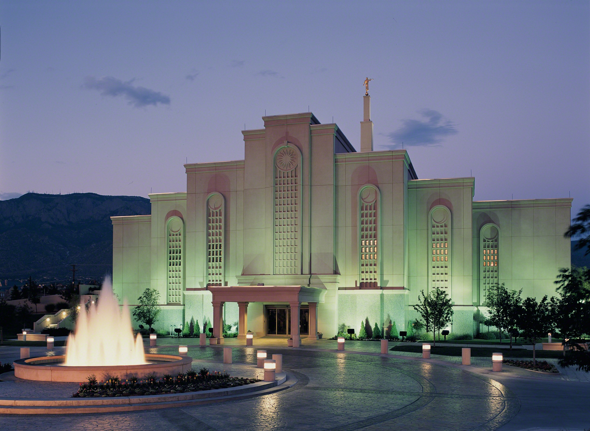

Where to Relax, Rejuvenate, and Prepare for Temples

Albuquerque New Mexico Temple
Address:10301 San Francisco Rd NE Albuquerque NM 87122-3437
Telephone: (1) 505-822-5110
Email:Log in to send email to temple
Services:Baptism,Initiatory, Endowment, and Sealing
History: April 4, 1997-Announced
June 20, 1998-Groundbreaking
March 5, 2000-Dedicated
Ordinance and Session Schedule:Saturday, January 5, 2019
6:30 AM
8:00 AM
10:00 AM
12:00 PM
2:00 PM
4:00 PM
6:00 PM
Temple closure schedule:
Tuesday, December 25, 2018 - Wednesday, December 26, 2018
Tuesday,January 1, 2019
Saturday, April 6, 2019
Monday, April 8, 2019 - Monday, April 22, 2019
Thursday, July 4, 2019
Tuesday, October 1, 2019 - Monday, November 4, 2019
Wednesday, November 27, 2019 (Limited Hours)
Thursday, November 28, 2019
Tuesday, December 24, 2019 - Thursday, December 26, 2019
Tuesday, December 31, 2019 (Limited Hours)
Current Temperature:37°F
Boston Massachusetts Temple
Address:100 Hinckley Wy Belmont MA 02478-2135
Telephone: (1) 617-993-9993
Email:Log in to send email to temple
Services: Baptism,Initiatory, Endowment, and Sealing
History:September 30, 1995-Announced
June 13, 1997-Groundbreaking
October 1, 2000-Dedicated
Ordinance and session schedule:Saturday, January 5, 2019
7:00 AM
8:00 AM
9:00 AM
9:00 AM Mandarin
10:00 AM
11:00 AM
12:00 PM
1:00 PM
2:00 PM
3:00 PM
4:00 PM
5:00 PM
6:00 PM
7:00 PM
Temple closure schedule:
Tuesday, December 25, 2018
Tuesday, January 1, 2019
Tuesday, January 8, 2019 - Monday, January 28, 2019
Saturday, April 6, 2019,Thursday, July 4, 2019
Monday, July 8, 2019 - Monday, July 22, 2019
Saturday, October 5, 2019
Wednesday, November 27, 2019
Thursday, November 28, 2019
Tuesday, December 24, 2019
Wednesday, December 25, 2019
Tuesday, December 31, 2019
Wednesday, January 1, 2020
Current Temperature:30°F
Idaho Falls Idaho Temple
Address:1000 Memorial Dr Idaho Falls ID 83402-3410
Telephone:(1) 208-522-7669
Email:Log in to send email to temple
Services:Baptism,Initiatory, Endowment, and Sealing
History:March 3, 1937-Announced
December 19, 1939-Groundbreaking
September 23, 1945-Dedicated
June 4, 2017-Rededicated
Ordinance and Session schedule:Saturday, January 5, 2019
6:30 AM
8:00 AM
10:00 AM
12:00 PM
2:00 PM
4:00 PM
6:00 PM
Temple Closure schedule:
Tuesday, December 25, 2018 - Wednesday, December 26, 2018
Tuesday, January 1, 2019,Saturday, April 6, 2019
Monday, April 8, 2019 - Monday, April 22, 2019
Thursday, July 4, 2019
Tuesday, October 1, 2019 - Monday, November 4, 2019
Wednesday, November 27, 2019 (Limited Hours)
Thursday, November 28, 2019,Tuesday, December 24, 2019 - Thursday, December 26, 2019
Tuesday, December 31, 2019 (Limited Hours)
Current Temperature:32°F Meridian Idaho Temple
Address:7355 N Linder Rd Meridian ID 83646
Telephone:(1) 208-957-7300
Email: Log in to send email to temple
Services: Baptism, Initiatory, Endowment, and Sealing
History: April 2, 2011-Announced
August 23, 2014-Groundbreaking
November 19, 2017-Dedicated
Ordinance and Session schedule: Saturday, January 5, 2019
6:30 AM
8:00 AM
10:00 AM
12:00 PM
2:00 PM
4:00 PM
6:00 PM
Temple closure schedule:
Tuesday, December 25, 2018 - Wednesday, December 26, 2018
Tuesday, January 1, 2019
Saturday, April 6, 2019
Monday, April 8, 2019 - Monday, April 22, 2019
Thursday, July 4, 2019
Tuesday, October 1, 2019 - Monday, November 4, 2019
Wednesday, November 27, 2019 (Limited Hours)
Thursday, November 28, 2019
Tuesday, December 24, 2019 - Thursday, December 26, 2019
Tuesday, December 31, 2019 (Limited Hours)
Current Temperature:°F Salt Lake City Utah Temple
Address:50 W North Temple St Salt Lake City UT 84150-9709
Telephone:(1) 801-240-2640
Email: Log in to send email to temple
Services: Baptism,Initiatory, Endowment, and Sealing
History:July 28, 1847-Announced
February 14, 1853-Groundbreaking
April 6, 1893-Dedicated
Ordinance and Session schedule:Saturday, January 5, 2019
No Sessions in selected language available for this day.
Temple Closure schedule:
Tuesday, December 25, 2018
Saturday, December 29, 2018 (Limited Hours)
Tuesday, January 1, 2019 - Monday, January 28, 2019
Saturday, April 6, 2019
Tuesday, July 2, 2019 - Monday, July 15, 2019
Wednesday, July 24, 2019
Saturday, October 5, 2019
Wednesday, November 27, 2019 (Limited Hours)
Thursday, November 28, 2019 - Friday, November 29, 2019
Tuesday, December 24, 2019 - Wednesday, December 25, 2019
Tuesday, December 31, 2019
Current Temperature:32°F
Tuscon Arizona Temple
Address:7281 North Skyline Dr Tucson AZ 85718
Telephone:(1) 520-395-3900
Email:Log in to send email to temple
Services:Baptism,Initiatory, Endowment, and Sealing
History:
October 6, 2012-Announced
October 17, 2015-Groundbreaking
August 13, 2017-Dedicated
Ordinance and Session schedule:"Saturday, January 5, 2019
6:30 AM
8:00 AM
9:00 AM Spanish
10:00 AM
11:00 AM
12:30 PM
1:30 PM
3:00 PM
4:00 PM
5:00 PM
Temple closure schedule:
Saturday, December 22, 2018
Tuesday, December 25, 2018 - Wednesday, December 26, 2018
Tuesday, January 1, 2019
Monday,February 11, 2019 - Monday,February 25, 2019
Saturday, April 6, 2019
Thursday, July 4, 2019 - Saturday, July 6, 2019
Monday, July 8, 2019 - Monday, July 22
Saturday, October 5, 2019","Wednesday, November 27, 2019 - Thursday, November 28, 2019
Tuesday, December 24, 2019 - Thursday, December 26, 2019
Tuesday, December 31, 2019 - Wednesday, January 1, 2020
Current Temperature:39°F